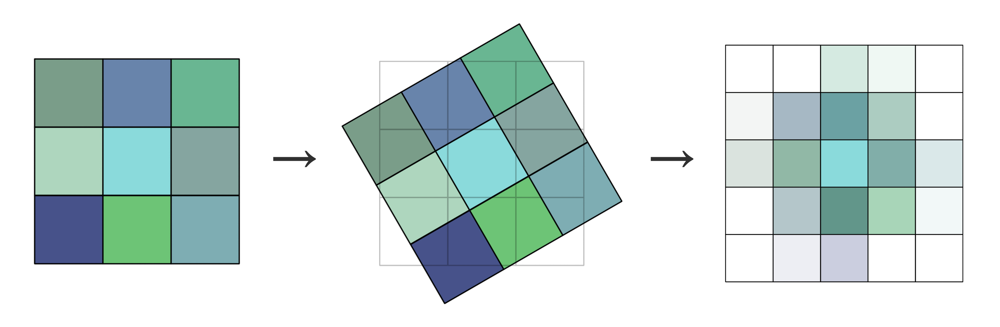

PointNet Paper Deep Dive: Everything You Need to Fully Understand PointNet
PointNet Paper Deep Dive: Everything You Need to Fully Understand PointNetPrefaceAbstract1. Introduction2. Related Work3. Problem Statement4. Deep Learning on Point Sets4.1 Properties of Point Sets in
Attention: This article was originally written in Chinese and published on this website. The English version was translated using GPT-4o. Apologies, as I am not a professional columnist and did not have enough time to personally translate or thoroughly proofread the content. I hope this does not affect your reading experience. If you notice any language or content errors, or have any suggestions for improvement, feel free to contact me at liaoziqiang7@gmail.com.
Preface
Over the past decade, deep learning has sparked revolutionary waves across multiple domains. From image recognition to speech processing, and even natural language understanding, nearly every field has witnessed breakthroughs driven by deep learning. However, when we turn our attention to the three-dimensional world, the challenges become significantly more complex. How to efficiently and directly process 3D data has remained a long-standing unsolved problem.
In this paper, the authors propose a highly innovative deep learning architecture—PointNet—which can directly process point cloud data, bypassing traditional voxelization or projection steps. This network is not only structurally simple but also demonstrates impressive generalization capabilities: whether it’s 3D object classification or semantic segmentation, PointNet handles them effortlessly and surpasses existing methods in multiple benchmark tests. While reading this paper, I often felt that the design of this network was “so natural,” as if it had always been meant to be this way; yet it is so ingenious that it’s hard for most people to conceive of. This paper not only provides a method for processing point cloud data but also inspires us at a conceptual level. Of course, the paper is quite technical and may be challenging for beginners to comprehend.
The primary motivation for writing this article is simple: first, to help myself fully understand the paper, and second, to assist more students like me who find reading research papers challenging. The guiding principle of this article is: leave no sentence unexplained. Often, authors assume that readers share similar knowledge backgrounds and can “infer” certain things that are “obvious.” Here, I aim to explain everything as clearly as possible.
This article is intended for readers who wish to understand the principles behind PointNet, especially those just starting their research journey. If you only want to use PointNet, I recommend directly learning about the PointNet++ architecture instead and skipping the underlying principles. Of course, I will also release a guided reading of the PointNet++ paper later.
For a better reading experience, you can visit this webpage. Don’t forget to leave a like and save the page before you leave! You can also find the original files in the corresponding GitHub repository.
This article assumes that readers have a basic understanding of point clouds and other common 3D representations, including their principles, characteristics, and operations. Readers unfamiliar with these topics may refer to related introductory articles. Now, let’s proceed with a paragraph-by-paragraph translation and detailed explanation of the original paper.
Abstract
① Point cloud is an important type of geometric data structure. ② Due to its irregular format, most researchers transform such data to regular 3D voxel grids or collections of images. This, however, renders data unnecessarily voluminous and causes issues. ③ In this paper, we design a novel type of neural network that directly consumes point clouds, which well respects the permutation invariance of points in the input. ④ Our network, named PointNet, provides a unified architecture for applications ranging from object classification, part segmentation, to scene semantic parsing. ⑤ Though simple, PointNet is highly efficient and effective. Empirically, it shows strong performance on par or even better than state-of-the-art. Theoretically, we provide analysis towards understanding what the network has learned and why the network is robust with respect to input perturbation and corruption.
Explanation:
- ① Sentence mentions that the author first describes point clouds as an "irregular" data format. So, what does "irregular" mean, and what does "regular" mean? In fact, the term "regular" here can be understood as having a fixed grid. For example, the voxel format, which has a fixed resolution and fixed grid size, allows us to specify regularly arranged small cubes in space once the starting coordinates are set, much like the pixels in an image. This regular arrangement also brings another property: ordered. Clearly, if we use the indices
(i, j, k)to access two voxel grids, the voxels retrieved by the indices will correspond to the same positions. However, the point cloud data structure does not have a fixed grid. Points can occupy any arbitrary continuous position in space, and they do not have an order. Furthermore, points in one point cloud do not have a clear correspondence to points in another. This is what is referred to as irregular. To describe this property more precisely, it can be summarized as continuous, sparse, and unordered. - ② Sentence mentions that previous works often converted irregular point clouds to voxel grid formats or even sampled them into images for processing, in order to adapt to neural networks that require regular inputs. However, this leads to data redundancy. Imagine that point clouds, as a sparse data structure, only need to store information about the parts of the object, while the empty parts do not occupy space. In contrast, voxel grids must store information for every position. Considering the cubic growth rate of
- ③ Sentence mentions that the network respects the permutation invariance of input points. Invariance refers to the property of a system, function, or model where its output remains unchanged when its input undergoes a specific transformation (e.g., translation, rotation, scaling, or permutation). If you have studied computer vision, this should not be difficult to understand. A simple example is that a good image recognition algorithm should exhibit translation invariance, as the category of an object does not depend on its location in the image. Permutation invariance means that the output is independent of the order of the input. For example, for a function
- ④ Sentence mentions that PointNet is applicable to multiple downstream tasks. This indicates that the PointNet architecture does not only focus on certain features of point clouds but is capable of extracting various levels of features comprehensively, including local structures, global structures, and semantics. If the extracted features can be represented as a feature vector, then training only a new output layer would suffice to achieve different functionalities.
1. Introduction
In this paper, we explore deep learning architectures capable of reasoning about 3D geometric data such as point clouds or meshes. ① Typical convolutional architectures require highly regular input data formats, like those of image grids or 3D voxels, in order to perform weight sharing and other kernel optimizations. ② Since point clouds or meshes are not in a regular format, most researchers typically transform such data to regular 3D voxel grids or collections of images (e.g., views) before feeding them to a deep net architecture. ③ This data representation transformation, however, renders the resulting data unnecessarily voluminous—while also introducing quantization artifacts that can obscure natural invariances of the data.
Explanation:
- ① Sentence has already been partially explained. Here, we will further elaborate on why highly regular input data formats are necessary for weight sharing and other kernel optimizations. Weight sharing refers to the reuse of convolutional kernel parameters (weights) across different positions in the input, reducing the number of parameters. Weight sharing is only feasible with regular inputs (like image pixel grids or 3D voxels) because their structures are consistent and invariant across positions. This allows convolutional kernels to match identically sized and arranged local regions at any position, enabling a fixed rule to process information across different locations. In contrast, point clouds are arbitrarily arranged, and there is no universal method to process arbitrary positions. Hence, weight sharing cannot be achieved.
- ② Sentence has already been explained in the abstract section. Here, we will explain quantization artifacts mentioned in ③ Sentence. A related concept is aliasing, which appears in Section 4.2. Therefore, it is necessary to clarify these two concepts:
- Analog signals need to be converted into digital signals through discretization for storage, which involves two main steps: sampling and quantization. Readers can refer to this article to understand what sampling and quantization are.
- Aliasing refers to distortion caused during the sampling process when the sampling rate is lower than the signal's Nyquist frequency, leading high-frequency signals to be incorrectly mapped as low-frequency signals. Using a 2D image as an example, this is like turning a highly detailed object into an image with fixed resolution. For instance, when taking a photo of a tree from a distance, it becomes impossible to distinguish individual leaves because a single pixel now corresponds to multiple leaves, causing their information to "blend and overlap" together. A similar effect occurs with voxel grids.
- Quantization artifacts arise when a continuous signal's amplitude is discretized into a finite set of discrete values (i.e., quantization), introducing error or distortion. These artifacts often manifest as loss of detail, non-smooth transitions, or unnatural characteristics. For example, in 2D images, due to limitations of the color space, a gradient in the sky might appear segmented into bands of color. In 3D voxel grids, if 30% of a voxel falls into a new grid after transformation, it will be quantized to 0 (unoccupied), leading to discrepancies between the voxel's shape and the original shape. For example, a vertical line rotated by 30 degrees should ideally remain straight, but due to quantization artifacts, it becomes stair-stepped instead. This is why the original text states that quantization artifacts "obscure the natural invariance of the data."

Figure 1. Applications of PointNet. We propose a novel deep net architecture that consumes raw point cloud (set of points) without voxelization or rendering. It is a unified architecture that learns both global and local point features, providing a simple, efficient and effective approach for a number of 3D recognition tasks.
For this reason, we focus on a different input representation for 3D geometry using simply point clouds—and name our resulting deep nets PointNets. Point clouds are simple and unified structures that avoid the combinatorial irregularities and complexities of meshes, and thus are easier to learn from. The PointNet, however, still has to respect the fact that a point cloud is just a set of points and therefore invariant to permutations of its members, necessitating certain symmetrizations in the net computation. Further invariances to rigid motions also need to be considered.
Explanation:
- This paragraph mainly explains the invariance of PointNet. It is robust to rigid body motions (translation and rotation), meaning that the position and pose of the point cloud do not affect the network's output. At the same time, PointNet also exhibits permutation invariance, meaning that the order of the points in the point cloud does not influence the output. PointNet extracts features for each point independently, then aggregates these independent features using a method that is insensitive to order to form global features, ensuring that the output is independent of the input point order. The principle behind this will be introduced later.
Our PointNet is a unified architecture that directly takes point clouds as input and outputs either class labels for the entire input or per point segment/part labels for each point of the input. The basic architecture of our network is surprisingly simple, as in the initial stages, each point is processed identically and independently. In the basic setting, each point is represented by just its three coordinates
Explanation:
- This section introduces the input and output of PointNet. The input is a point cloud, where each point is described by three coordinate components, and the data's dimensions are
(N, 3). In the Open3D library, if you access thepointsattribute of a point cloud object and printpcd.points.shape, the output will indeed be(N, 3), where N is the number of points. - The output, on the other hand, varies depending on the task. Generally speaking, after global feature aggregation, the network produces a global feature vector. After this step, the network begins to diverge. For classification tasks, this vector is passed through a series of fully connected layers to predict the class. For segmentation tasks, the local features of each point and the global feature vector are concatenated to form a new, longer vector. These vectors are then passed through multilayer perceptrons to produce category scores for each point. The specific dimensions and usage of the output will be introduced later.
① Key to our approach is the use of a single symmetric function, max pooling. ② Effectively, the network learns a set of optimization functions/criteria that select interesting or informative points of the point cloud and encode the reason for their selection. ③ The final fully connected layers of the network aggregate these learned optimal values into the global descriptor for the entire shape as mentioned above (shape classification) or are used to predict per point labels (shape segmentation).
Explanation:
As mentioned earlier, PointNet uses an order-insensitive function to aggregate features. ① Sentence introduces the name of this function: Max Pooling. In PointNet, this function computes the maximum value along each feature dimension, identifying the most prominent point for each feature and using that point's value as the global feature for that dimension.
- Example: If point
- Example: If point
"Using the most prominent value in each feature dimension to describe the overall feature" is a general and effective approach. The core idea is that max pooling preserves the most important or salient information (i.e., the maximum value) for each feature dimension. These values often come from key points that reflect the core geometric structure and semantic features of the point cloud. Compared to average pooling, max pooling focuses more on salient features and is less likely to be diluted by irrelevant points (e.g., noisy or background points).
② Sentence mentions "selecting interesting or informative points from the point cloud," which refers to using max pooling to find the most prominent point for each feature dimension and obtaining its feature value. The "set of optimized functions/criteria learned by the network" refers to the process of local feature extraction, where each feature's prominence for a single point is scored, enabling max pooling to determine which points' features are most valuable. This scoring operation is what the original text describes as "encoding the reasons for its selection."
③ Sentence was already mentioned in the previous section and refers to the process of converting the feature vector into the output result.
① Our input format is easy to apply rigid or affine transformations to, as each point transforms independently. ② Thus, we can add a data-dependent spatial transformer network that attempts to canonicalize the data before the PointNet processes them, so as to further improve the results.
Explanation:
① Sentence explains one advantage of using point clouds. Since the points in a point cloud are independent and unordered, applying a transformation to each point individually results in a transformation of the entire point cloud, making it very straightforward.
Readers might wonder why applying the same transformation to each unit achieves a transformation of the whole, and why this is highlighted specifically for point clouds. In fact, data formats based on regular sampling, such as 2D images or voxel grids, cannot achieve this. Let’s use 2D images as an example:

As shown, after each unit (i.e., pixel) of the original 2D image undergoes an individual transformation, the new units no longer align with the original grid. Thus, interpolation methods like linear interpolation (the above figure uses bilinear interpolation) are required to reassign values to each grid cell, resulting in the image on the far right. Similarly, voxel grids also require re-regularization after transformations, which is relatively complex to achieve. In contrast, point clouds do not require any post-processing after each point is transformed individually, making the process much simpler. Moreover, no information is lost, and no bias is introduced.
② Sentence mentions a new spatial transformer network T-Net, which can be considered an add-on module for PointNet. It computes a transformation matrix either before the input point cloud or after extracting local features, aligning them to a normalized geometric space. This is explained in detail later in the text. The term "data-dependent" in the original text refers to the fact that the transformation is dynamically learned based on the input data, rather than being a fixed or preset transformation matrix. Specifically, T-Net uses a neural network to automatically compute the optimal transformation matrix based on the input point cloud or point features.
We provide both a theoretical analysis and an experimental evaluation of our approach. ① We show that our network can approximate any set function that is continuous. ② More interestingly, it turns out that our network learns to summarize an input point cloud by a sparse set of key points, which roughly corresponds to the skeleton of objects according to visualization. The theoretical analysis provides an understanding of why our PointNet is highly robust to small perturbations of input points as well as to corruption through point insertion (outliers) or deletion (missing data).
Explanation:
- ① Sentence can be expressed mathematically as follows: Assume a point set is represented as
- ② Sentence was explained earlier. PointNet represents the overall feature of a point cloud by selecting a sparse set of key points, avoiding the influence of insignificant or irrelevant points, which makes it highly robust. The authors demonstrated this through theoretical derivations, experiments, and visualizations.
On a number of benchmark datasets ranging from shape classification, part segmentation to scene segmentation, we experimentally compare our PointNet with state-of-the-art approaches based upon multi-view and volumetric representations. Under a unified architecture, not only is our PointNet much faster in speed, but it also exhibits strong performance on par or even better than state of the art.
The key contributions of our work are as follows:
- We design a novel deep net architecture suitable for consuming unordered point sets in 3D;
- We show how such a net can be trained to perform 3D shape classification, shape part segmentation, and scene semantic parsing tasks;
- We provide thorough empirical and theoretical analysis on the stability and efficiency of our method;
- We illustrate the 3D features computed by the selected neurons in the net and develop intuitive explanations for its performance.
The problem of processing unordered sets by neural nets is a very general and fundamental problem – we expect that our ideas can be transferred to other domains as well.
Explanation:
- It can be seen that this paper is not only highly innovative but also very comprehensive in its scope. It not only proposes a new structure for processing point clouds but also demonstrates that it can generalize to all unordered set problems. The paper also provides an analysis of PointNet's principles, offering great convenience for understanding this work.
2. Related Work
Point Cloud Features: ① Most existing features for point clouds are handcrafted towards specific tasks. Point features often encode certain statistical properties of points and are designed to be invariant to certain transformations, ② which are typically classified as intrinsic [2, 24, 3] or extrinsic [20, 19, 14, 10, 5]. ③ They can also be categorized as local features and global features. For a specific task, it is not trivial to find the optimal feature combination.
Explanation:
- ① Sentence highlights two limitations of traditional methods: manual design and specificity. In contrast, PointNet performs automatic feature extraction via neural networks and can be applied to various downstream tasks. This sentence also discusses some principles of feature selection, such as satisfying invariance properties.
- Intrinsic Features vs. Extrinsic Features: Intrinsic features relate to the geometric properties of the object itself, such as shape or curvature, representing the object's internal attributes. Extrinsic features, on the other hand, are related to the coordinate system, such as the object's position or pose, which are defined relative to an external reference frame.
- Local Features vs. Global Features: Local features focus on individual points and their neighborhoods, such as normal vectors or local shapes, emphasizing finer details. Global features capture overall characteristics of the point cloud, such as the geometric center, shape, or size. It is worth noting that for point clouds, two point clouds with almost identical global features may not necessarily have identical local features (this also depends on the robustness of the local feature extraction algorithm). For instance, the same cube can be described using completely different point cloud distributions at a microscopic level.
Deep Learning on 3D Data： 3D data has multiple popular representations, leading to various approaches for learning.
- Volumetric CNNs: [28, 17, 18] are the pioneers applying 3D convolutional neural networks on voxelized shapes. However, volumetric representation is constrained by its resolution due to data sparsity and computation cost of 3D convolution. FPNN [13] and Vote3D [26] proposed special methods to deal with the sparsity problem; however, their operations are still on sparse volumes, and it's challenging for them to process very large point clouds
- Multiview CNNs: [23, 18] have tried to render 3D point clouds or shapes into 2D images and then apply 2D conv nets to classify them. With well-engineered image CNNs, this line of methods has achieved dominating performance on shape classification and retrieval tasks [21]. However, it's nontrivial to extend them to scene understanding or other 3D tasks such as point classification and shape completion
- Spectral CNNs: Some latest works [4, 16] use spectral CNNs on meshes. However, these methods are currently constrained on manifold meshes such as organic objects, and it's not obvious how to extend them to non-isometric shapes such as furniture
- Feature-based DNNs: [6, 8] firstly convert the 3D data into a vector, by extracting traditional shape features and then use a fully connected net to classify the shape. We think they are constrained by the representation power of the features extracted.
Explanation:
- This section analyzes existing methods for learning from 3D data and points out their strengths and weaknesses. Volumetric convolutional neural networks (CNNs) directly inherit the convolution operation from 2D images, making them very intuitive. However, their disadvantage is also obvious: voxel representations require too much storage space.
- Multi-view convolutional neural networks transform 3D problems into traditional 2D problems. In fact, traditional 2D tasks also address problems in the 3D real world. For instance, image recognition tasks involve recognizing objects in the 3D world from single 2D images. Thus, this is also an intuitive approach. However, its drawback is critical: it can only handle tasks like classification and retrieval, but cannot address tasks directly related to 3D data.
- Spectral convolutional neural networks interpret the term "spectral" as "frequency spectrum." In image processing, when spatial domain operations are challenging, transformations into frequency domains can be used instead. Similarly, although 3D models cannot be directly aggregated, Spectral CNNs [4] extend convolution operations to non-Euclidean spaces by defining convolution on the eigenvalues and eigenvectors (i.e., the spectral domain) of the graph Laplacian operator. This method is suitable for manifold meshes, which are regular 3D mesh structures with continuous surfaces, no self-intersections, or gaps, and are often used to represent organic objects. However, non-isometric shapes, which cannot be mapped to each other through isometric transformations, have inconsistent spectral features due to their complexity and lack of unified geometric structure. Thus, spectral convolutional neural networks cannot directly process such shapes. Readers only need to understand that this method has a limited range of applications.
- Feature-based deep neural networks are advantageous because of their simplicity, but they also have clear disadvantages: they rely heavily on well-designed features. Overall, the four methods mentioned above all have their respective issues to varying degrees.
Deep Learning on Unordered Sets: From a data structure point of view, a point cloud is an unordered set of vectors. While most works in deep learning focus on regular input representations like sequences (in speech and language processing), images, and volumes (video or 3D data), not much work has been done in deep learning on point sets.
One recent work from Oriol Vinyals et al. [25] looks into this problem. They use a read-process-write network with an attention mechanism to consume unordered input sets and show that their network has the ability to sort numbers. However, since their work focuses on generic sets and NLP applications, it lacks the consideration of geometry in the sets.
Explanation:
- In 2017, when this paper was published, research on unordered sets was relatively scarce. For the two most popular tasks in deep learning—image processing and natural language processing—images are regular and ordered, while language has autocorrelated sequential structures. Both are significantly different from unordered sets.
3. Problem Statement
We design a deep learning framework that directly consumes unordered point sets as inputs. A point cloud is represented as a set of 3D points
For the object classification task, the input point cloud is either directly sampled from a shape or pre-segmented from a scene point cloud. Our proposed deep network outputs
Explanation:
- I believes that readers with a basic understanding of deep learning, particularly how it represents and learns classification and semantic segmentation problems, should be able to understand the above two paragraphs. "The input can be a single object for part region segmentation" refers to inputting the point cloud of a single object (e.g., a lamp) and segmenting it into its components. "Sub-volumes of a 3D scene for object region segmentation" refers to dividing an entire scene into smaller local regions and segmenting them according to different objects.
4. Deep Learning on Point Sets
The architecture of our network (Sec 4.2) is inspired by the properties of point sets in
4.1 Properties of Point Sets in
Our input is a subset of points from an Euclidean space. It has three main properties:
- Unordered. Unlike pixel arrays in images or voxel arrays in volumetric grids, point cloud is a set of points without specific order. In other words, a network that consumes
- Interaction among points. The points are from a space with a distance metric. It means that points are not isolated, and neighboring points form a meaningful subset. Therefore, the model needs to be able to capture local structures from nearby points, and the combinatorial interactions among local structures.
- Invariance under transformations. As a geometric object, the learned representation of the point set should be invariant to certain transformations. For example, rotating and translating points all together should not modify the global point cloud category nor the segmentation of the points.
Explanation:
- The unordered and invariant properties of point clouds have already been explained earlier.
- The second point highlights the necessity of extracting local features. Semantics exist because the elements of a set or sequence are not isolated but interrelated. These relationships give rise to meaning. Although point clouds are unordered, spatial proximity between points provides a basis for extracting local information.

Figure 2. PointNet Architecture. The classification network takes n points as input, applies input and feature transformations, and then aggregates point features by max pooling. The output is classification scores for k classes. The segmentation network is an extension to the classification net. It concatenates global and local features and outputs per point scores. “mlp” stands for multi-layer perceptron, numbers in bracket are layer sizes. Batchnorm is used for all layers with ReLU. Dropout layers are used for the last mlp in classification net.
4.2 PointNet Architecture
Our full network architecture is visualized in Fig 2, where the classification network and the segmentation network share a great portion of structures. Please read the caption of Fig 2 for the pipeline.
Our network has three key modules: the max pooling layer as a symmetric function to aggregate information from all the points, a local and global information combination structure, and two joint alignment networks that align both input points and point features.
We will discuss our reason behind these design choices in separate paragraphs below.
Explanation:
As mentioned earlier in the paper, the network structure is "surprisingly simple" and does not use any complex components. If you have already understood the principles of the main steps described previously, the architecture diagram should not be difficult to follow. Here, we will outline the entire network process. I typically prefers to trace the flow of information, linking each part through its input, output, and format.
Part A can be seen as a single block.
- First, we have a point cloud as input with dimensions
- Before being processed by the MLP (Multi-Layer Perceptron), the input is first sent to the T-Net. The T-Net takes a point cloud of dimension
- The transformation matrix is then applied to the input point cloud, resulting in an aligned point cloud with dimensions still
- The aligned point cloud is passed through the MLP, producing an output with dimensions
- First, we have a point cloud as input with dimensions
Part B can also be considered a single block, with a structure almost identical to Part A, except that the input now consists of
Part C is the Max Pooling operation, which has already been explained earlier. It outputs a single feature vector of dimensions
The remaining parts correspond to specific task applications:
- Part D is for classification tasks. It transforms the
- Parts G, H, and I correspond to semantic segmentation tasks. In Part G, the
- Part D is for classification tasks. It transforms the
Attention: At this point, we have gained a basic and comprehensive understanding of the overall architecture and fundamental principles of PointNet. If you are only interested in applying PointNet in your own project and want a basic understanding of its structure and principles, this is sufficient, and you can directly proceed to the experimental or conclusion section. However, if you are curious about the theoretical foundations of PointNet or wish to conduct academic research based on it, I suggest that you continue reading the remaining sections. These sections include theoretical analysis and numerous mathematical calculations, and it is recommended to read them carefully and reflect on them repeatedly.
Symmetry Function for Unordered Input
In order to make a model invariant to input permutation, three strategies exist:
- Sort input into a canonical order.
- Treat the input as a sequence to train an RNN, but augment the training data by all kinds of permutations.
- Use a simple symmetric function to aggregate the information from each point.
Here, a symmetric function takes
Explanation:
- Here, the authors begin introducing the principles behind the key components of PointNet. To help readers gain a preliminary understanding of PointNet, these topics were already touched upon earlier; here, they are explained in greater depth.
- First, the authors needed to address the problem of "unordered input," i.e., enabling PointNet to achieve permutation invariance. The authors proposed three potential solutions. The first solution involves sorting the point cloud according to a specific rule, ensuring that regardless of how the original sequence is shuffled, the sorted result remains consistent. The authors discuss this further in the next paragraph.
- The second solution involves randomly shuffling the input order, allowing the neural network to adapt to arbitrary input sequences.
- The third solution is the one adopted by the authors. Here, the concept of a symmetric function is introduced. The authors mention addition and multiplication, which, as we learned in elementary school, are commutative operations. For example:
Definition:
Let
then
While sorting sounds like a simple solution, ① in high-dimensional space there does not exist an ordering that is stable with respect to point perturbations in the general sense. ② This can be easily shown by contradiction. If such an ordering strategy exists, it defines a bijection map between a high-dimensional space and a
Explanation:
This section explains why it is difficult to find a stable algorithm for sorting point clouds. First, the concept of "stability under perturbations" is introduced. The "stability" of sorting means that if the points in the point cloud undergo slight perturbations (e.g., due to noise or measurement errors), the sorting result should only change slightly rather than becoming completely disrupted. This is the most basic expectation for any sorting algorithm.
Sentences ②, ③, and ④ briefly discuss why such a sorting algorithm cannot be found, but the authors explain this in a somewhat vague manner. Below, I will attempt to analyze this problem more precisely. Due to my own limitations, the following mathematical discussion may contain errors and does not directly prove the conclusion. However, I hope to provide a line of reasoning to help readers understand.
First, let us clarify what is meant by "defining a bijective mapping between a high-dimensional space and the 1D real number line."
Let us start with a question: in our undergraduate studies, we learned various sorting algorithms, but how do we describe these algorithms in a unified way? Here, I am referring to all types of sorting algorithms, regardless of their implementation principles. If we describe sorting algorithms in terms of input and output, a sorting algorithm can be abstracted as: given an input array of
The "high-dimensional space" mentioned by the authors refers to the dimensions of
The output of the sorting algorithm,
As mentioned earlier, a specific element always corresponds to a fixed output, regardless of the input order. Whether the input is

Here,
Next, I will analyze the conclusions in ③ and ④ using my own reasoning.
First, let us define the point set. Suppose a point set in a high-dimensional space is represented by a matrix
Mapping from a high-dimensional space to a lower-dimensional space is also called a projection. Here, we assume the projection is linear. The process of mapping from a high-dimensional space
where
The above provides a more rigorous and clear definition of the problem. However, due to my limitations, I am unable to provide a formal proof, and neither did the authors of the paper. Nevertheless, to help readers understand why it is difficult to find such a sorting algorithm, we can proceed with the following thought process:
- Finding a sorting algorithm can be reframed as the following question: For
- The specific process is too complex to elaborate here, but based on the existence theorem for pseudoinverses and the practical scenario, such a
- If we relax the condition of linear transformations, can we construct such a bijection? Based on my limited mathematical knowledge, I believe it is possible, because the number of points in the space
- However, a good sorting algorithm should not only be correct but also stable. This means that if a point's position (including its position in the feature space) undergoes slight perturbations, its position on the real number line should remain roughly unchanged. In other words, nearby points in the high-dimensional space should remain nearby after mapping, as stated in sentence ④ of the text. Whether such an algorithm can be constructed or learned through neural networks is beyond the scope of this discussion. The experiment in sentence ⑥ also demonstrates that sorting does not work well.
- Finding a sorting algorithm can be reframed as the following question: For
The idea to use RNN considers the point set as a sequential signal and hopes that by training the RNN with randomly permuted sequences, the RNN will become invariant to input order. However, in "OrderMatters" [25], the authors have shown that order does matter and cannot be totally omitted. While RNNs have relatively good robustness to input ordering for sequences with small lengths (dozens), it's hard to scale to thousands of input elements, which is the common size for point sets. Empirically, we have also shown that models based on RNN do not perform as well as our proposed method (Fig 5).
Explanation:
- This section analyzes the problem based on empirical observations. For large-scale data like point clouds, RNNs seem to struggle with robustness to input order, even when trained with techniques such as data augmentation.
Our idea is to approximate a general function defined on a point set by applying a symmetric function on transformed elements in the set:
where
Empirically, our basic module is very simple: we approximate
Explanation:
- This section uses mathematical definitions that may appear difficult to understand at first, but once their practical meaning is grasped, they are not too hard to follow.
- What PointNet does is use a neural network to approximate this theoretical function
- ① states that with
While our key module seems simple, it has interesting properties (see Sec 5.3) and can achieve strong performance (see Sec 5.1) in a few different applications. Due to the simplicity of our module, we are also able to provide theoretical analysis as in Sec 4.3.
Local and Global Information Aggregation
The output from the above section forms a vector
Our solution can be seen in Figure 2 (Segmentation Network). After computing the global point cloud feature vector, we feed it back to per-point features by concatenating the global feature with each of the point features. Then we extract new per-point features based on the combined point features—this time the per-point feature is aware of both the local and global information.
With this modification, our network is able to predict per-point quantities that rely on both local geometry and global semantics. For example, we can accurately predict per-point normals (see figure in supplementary materials), validating that the network is able to summarize information from the point's local neighborhood. In the experimental section, we also show that our model can achieve state-of-the-art performance on shape part segmentation and scene segmentation.
Explanation:
- The content in the "Local and Global Information Aggregation" section has already been explained in the "PointNet Architecture" part, so it will not be repeated here.
- However, we can introduce the technique of "vector concatenation" as a supplement. Vector Concatenation is a common operation in deep learning, used to combine multiple vectors into a larger vector. The core idea is to directly concatenate vectors from different sources or with different features along a specific dimension, thereby retaining the original information of each vector and forming a new representation. For instance, the vectors
Joint Alignment Network
The semantic labeling of a point cloud must be invariant under certain geometric transformations, such as rigid transformations. Therefore, we expect that the learned representation by our point set is invariant to these transformations.
A natural solution is to align all input sets to a canonical space before feature extraction. Jaderberg et al. [9] introduced the idea of a spatial transformer to align 2D images through sampling and interpolation, achieved by a specifically tailored layer implemented on GPU.
Explanation:
In the Abstract section, I have already provided a preliminary introduction to invariance, so readers should understand why the authors aim for PointNet to exhibit invariant properties. I believe there are several possible approaches to achieving invariance (not guaranteed to be correct, inspired by this blog post):
- Invariance in the network structure itself: A neural network can be viewed as a composition of many functions, and if these functions inherently satisfy certain invariances, the overall network may also exhibit the same invariance.
- Invariance through training: By using data augmentation, the network can be trained to adapt to transformed data, thereby achieving an overall invariant property.
- Preprocessing: Input data can be preprocessed to normalize or align it to a canonical space, directly avoiding invariance issues. This space could be a 2D image space, 3D space, or any higher-dimensional feature space.
The paper refers to the work in [9], which is targeted at 2D images. This method first identifies transformation parameters (such as translation, rotation, scaling, etc.) and then normalizes the transformed data within a sampling grid, as described by the "sampling and interpolation" mentioned in the paper. This network is differentiable and can be integrated into existing networks for joint training and use.
① Our input form of point clouds allows us to achieve this goal in a much simpler way compared with [9]. ② We do not need to invent any new layers, ③ and no aliasing is introduced as in the image case. ④ We predict an affine transformation matrix by a mini-network (T-net in Fig 2) and directly apply this transformation to the coordinates of the input points. ⑤ The mini-network itself resembles the larger network and is composed of basic modules for point-independent feature extraction, max pooling, and fully connected layers. More details about the T-net are in the supplementary.
Explanation:
- According to the earlier discussion on the properties of point clouds (see the Introduction section), transformations on point clouds do not require a normalization process, making them very simple.
- Sentence ③ mentions aliasing effects. This term is the counterpart of quantization artifacts, which I explained in detail in the first paragraph of the Introduction section. Readers can refer back to it if they need a refresher. This will not be repeated here.
- Sentence ② states that PointNet and T-Net do not require the design of new layer types, relying instead on structures such as MLPs and Max Pooling. In the paper, T-Net employs an architecture similar to PointNet.
- Sentence ④ refers to the affine transformation matrix. An affine transformation matrix is a mathematical tool used to describe affine transformations, such as translation, scaling, rotation, and shearing. Through affine transformations, original points can be transformed into a normalized space. In traditional digital image processing, affine transformations are often used to correct images, so it is not difficult to understand their use here for aligning points in higher-dimensional spaces.
- Sentence ⑤ briefly touches on the network structure of T-Net. Since it does not affect the main discussion, this part will be set aside for now.
This idea can be further extended to the alignment of feature space as well. We can insert another alignment network on point features and predict a feature transformation matrix to align features from different input point clouds. However, the transformation matrix in the feature space has a much higher dimension than the spatial transform matrix, which greatly increases the difficulty of optimization. Therefore, we add a regularization term to our softmax training loss, constraining the feature transformation matrix to be close to an orthogonal matrix:
where
Explanation:
This section explains that T-Net can perform alignment not only in 3D space but also in feature space. Additionally, it discusses loss functions. Most papers do not introduce concepts in a top-down manner but rather present innovations in a scattered way, which can create some barriers to understanding. Here, we will organize the ideas.
First, let us clarify why T-Net is designed to output an orthogonal matrix. A fundamental property of orthogonal matrices is that they preserve vector lengths and angles after transformation. Orthogonal matrices do not introduce scaling, distortion, or loss of information in the features. Ensuring that
Next, let us explain the formula.
- If
- Here,
Finally, let us summarize the overall loss function used in PointNet:
The loss function has two components. The first part,
We can combine this understanding with the source code for further insight:
x1def get_loss(pred, label, end_points, reg_weight=0.001):2""" pred: B*NUM_CLASSES,3label: B, """4loss = tf.nn.sparse_softmax_cross_entropy_with_logits(logits=pred, labels=label)5classify_loss = tf.reduce_mean(loss)6tf.summary.scalar('classify loss', classify_loss)78# Enforce the transformation as orthogonal matrix9transform = end_points['transform'] # B x K x K10K = transform.get_shape()[1].value11mat_diff = tf.matmul(transform, tf.transpose(transform, perm=[0,2,1]))12mat_diff -= tf.constant(np.eye(K), dtype=tf.float32)13mat_diff_loss = tf.nn.l2_loss(mat_diff)14tf.summary.scalar('mat loss', mat_diff_loss)1516return classify_loss + mat_diff_loss * reg_weight
4.3 Theoretical Analysis
Universal Approximation
We first show the universal approximation ability of our neural network to continuous set functions. By the continuity of set functions, ① intuitively, a small perturbation to the input point set should not greatly change the function values, such as classification or segmentation scores.
Formally, ② let
Explanation:
Here we arrive at one of the most difficult parts of the paper (excluding the appendix). In this section, the authors provide a mathematical analysis of the properties of PointNet and describe them in formal mathematical language. They also provide a proof of the theorem, which can be found in the appendix of the paper.
Regarding the Universal Approximation Theorem, readers can refer to Wikipedia for more details. In short, it states that neural networks can approximate any complex function to an arbitrary degree of accuracy. Here, the authors demonstrate the universal approximation capability of PointNet. The need to approximate a continuous function is explained in Sentence ①. To ensure robustness, this property is necessary. Imagine that if a small change in the input leads to abrupt changes in the output, or even causes it to diverge, the function cannot be stable.
Let us break down the formal definitions presented here:
First is the definition of
Sentence ③ is a bit convoluted, but it essentially defines a method for comparing point sets. For example, when comparing two numbers on the real number line, we can use
- For each point in
- Perform the same operation in reverse for
- Finally, take the larger of these two values as the Hausdorff distance. If
- For each point in
Sentence ④ should be very familiar to readers—it uses the classical
- For
- For
- For
Sentence ⑤ will be addressed when we discuss Theorem 2.
Theorem 1
Suppose
where
Explanation:
We can understand this in two steps. First, the theorem defines a function
The purpose of Theorem 1 is to identify such a function
- The input is a point set
- The final formula means: there exist continuous functions
- The input is a point set
This theorem is intended to theoretically justify the design of PointNet. The proof of this theorem is provided in the appendix.
The proof of this theorem can be found in our supplementary material. The key idea is that in the worst case, the network can learn to convert a point cloud into a volumetric representation by partitioning the space into equal-sized voxels. In practice, however, the network learns a much smarter strategy to probe the space, as discussed further in the visualizations of point functions.
Explanation:
Here, the authors provide an intuitive explanation of why such a function must exist, but they only briefly touch on it, seemingly considering it "self-evident" 😭. Let us elaborate:
- Assume the input consists of
- Next, the point cloud is processed by the
- Suppose we divide the space into
- Next comes the
- As a result, the global feature vector of PointNet essentially becomes a flattened voxel grid. Theoretically, we can directly use a fully connected network to transform the voxel information into the final result, i.e., the
- Assume the input consists of
This is the "worst-case scenario" described by the authors. As we can see, in theory, such a network can still accomplish the task. Of course, the actual mechanism of PointNet is far more sophisticated and flexible, as we have previously discussed.
Bottleneck Dimension and Stability
Theoretically and experimentally, we find that the expressiveness of our network is strongly affected by the dimension of the max pooling layer, i.e.,
We define
Explanation:
The first paragraph discusses the impact of
- As mentioned earlier, the Max Pooling operation in deep learning selects the most significant points across different feature dimensions. This is similar to forming a committee by selecting experts from various fields, such as economics, public health, education, and infrastructure. These experts are highly knowledgeable in their respective domains and can represent their fields effectively. When brought together, they provide a comprehensive perspective on the overall budget. In this analogy, the “fields” correspond to the “features” in deep learning.
- If
The author then explains the network's stability. The second paragraph should be relatively straightforward to understand.
Theorem 2
Suppose
- (a)
- (b)
Explanation of the Theorem
- (a) implies that
- (b) implies that
Explanation:
This part uses only mathematical language for descriptions, making it relatively difficult to understand. We will break it down for analysis.
(a) For every point set
- The core idea of the algorithm is that
- The authors' strategy of dividing the point set into critical points and other points for analysis is highly ingenious.
(b) This sentence states that the critical point set contains at most
Combined with the continuity of
Explanation:
- As mentioned earlier, the continuity of
- At this point, the most theoretical and challenging part of the paper has concluded. The subsequent experimental sections are relatively straightforward and require less explanation. Readers who are familiar with the earlier content should have no difficulty understanding these sections.
- Additionally, the corresponding code for this paper is not large or particularly complex. Readers can download, read, and experiment with it from the authors' project page.
5. Experiment
Experiments are divided into four parts. First, we show PointNets can be applied to multiple 3D recognition tasks (Sec 5.1). Second, we provide detailed experiments to validate our network design (Sec 5.2). At last we visualize what the network learns (Sec 5.3) and analyze time and space complexity (Sec 5.4).
5.1 Applications
In this section, we show how our network can be trained to perform 3D object classification, object part segmentation, and semantic scene segmentation. Even though we are working on a brand-new data representation (point sets), we are able to achieve comparable or even better performance on benchmarks for several tasks.
3D Object Classification
Our network learns a global point cloud feature that can be used for object classification. We evaluate our model on the ModelNet40 [28] shape classification benchmark. There are 12,311 CAD models from 40 man-made object categories, split into 9,843 for training and 2,468 for testing. While previous methods focus on volumetric and multi-view image representations, we are the first to directly work on raw point clouds.
We uniformly sample 1,024 points on mesh faces according to face area and normalize them into a unit sphere. During training, we augment the point cloud on-the-fly by randomly rotating the object along the up-axis and jittering the position of each point by Gaussian noise with zero mean and a standard deviation of 0.02.
Explanation:
- Rotation around the up-axis typically refers to the Z-axis, you can think of it as standing still and turning your head from side to side. Readers may wonder why rotation is still needed after applying affine transformations through T-Net. In fact, T-Net only normalizes the object to a certain range and aligns it, e.g., ensuring that a chair lies flat on the ground. However, the specific orientation of the chair is not determined. Therefore, learning Z-axis rotation invariance is necessary.
Due to the absence of content that requires explanation, some paragraphs are omitted here.
3D Object Part Segmentation
Part segmentation is a challenging fine-grained 3D recognition task. Given a 3D scan or a mesh model, the task is to assign part category labels (e.g., chair leg, cup handle) to each point or face.
We evaluate on the ShapeNet part dataset from [29], which contains 16,881 shapes from 16 categories, annotated with 50 parts in total. Most object categories are labeled with two to five parts. Ground truth annotations are labeled on sampled points on the shapes.
We formulate part segmentation as a per-point classification problem. The evaluation metric is mean Intersection over Union (mIoU) on points. For each shape S of category C, to calculate the shape's mIoU: for each part type in category C, compute the IoU between ground truth and prediction. If the union of ground truth and prediction points is empty, then count the part IoU as 1. Then, we average IoUs for all part types in category C to get the mIoU for that shape. To calculate the mIoU for the category, we take the average of mIoUs for all shapes in that category.
Explanation:
- Intersection over Union (IoU) considers both the intersection (the part of the model prediction that is correct) and the union (all relevant parts, including incorrect predictions and missed areas). IoU = Intersection / Union. This formula balances the accuracy of the model's predictions and its coverage. The more accurate the prediction, the larger the intersection, and the closer the union is to the intersection, resulting in a higher IoU value. The authors also mention handling the case when the union is empty. In such cases, IoU is set to 1 because there are no ground truth points and no predicted points, which is considered entirely correct.
Due to the absence of content that requires explanation, some paragraphs are omitted here.
Semantic Segmentation in Scenes
Our network on part segmentation can be easily extended to semantic scene segmentation, where point labels become semantic object classes instead of object part labels.
We experiment on the Stanford 3D semantic parsing data set [1]. The dataset contains 3D scans from Matterport scanners in 6 areas including 271 rooms. Each point in the scan is annotated with one of the semantic labels from 13 categories (chair, table, floor, wall, etc., plus clutter).
To prepare training data, we firstly split points by room, and then sample rooms into blocks with an area of 1m by 1m. We train our segmentation version of PointNet to predict per-point class in each block. Each point is represented by a 9-dim vector of XYZ, RGB, and normalized location relative to the room (from 0 to 1). At training time, we randomly sample 4096 points in each block on-the-fly. At test time, we test on all the points. We follow the same protocol as [1] to use a k-fold strategy for train and test.
Explanation:
- This demonstrates the versatility of PointNet. It not only accepts 3-dimensional point clouds but can also incorporate RGB values and other information.
Due to the absence of content that requires explanation, some paragraphs are omitted here.
5.2 Architecture Design Analysis
Comparison with Alternative Order-invariant Methods
Due to the absence of content that requires explanation, some paragraphs are omitted here.
Effectiveness of Input and Feature Transformations
Due to the absence of content that requires explanation, some paragraphs are omitted here.
Robustness Test
We show our PointNet, while simple and effective, is robust to various kinds of input corruptions. We use the same architecture as in Figure 5's max pooling network. Input points are normalized into a unit sphere. Results are in Figure 6.
As to missing points, when there are
Explanation:
Here, we need to explain what Furthest Point Sampling (FPS) and Random Sampling are:
- Furthest Point Sampling is a distance-based sampling strategy that aims to select data points that are as dispersed as possible from a dataset. The sampling process involves selecting a point, adding it to the selected set, and then finding the point farthest from the already selected points to add to the set. This process repeats iteratively. This method ensures that the selected data points have maximum spatial coverage and better represent the overall data distribution.
- Random Sampling, on the other hand, does not consider spatial distribution. Each data point has an equal probability of being selected.
5.3 Visualizing PointNet
Due to the absence of content that requires explanation, some paragraphs are omitted here.
6. Conclusion
In this work, we propose a novel deep neural network PointNet that directly consumes point cloud. Our network provides a unified approach to a number of 3D recognition tasks including object classification, part segmentation and semantic segmentation, while obtaining on par or better results than state of the arts on standard benchmarks. We also provide theoretical analysis and visualizations towards understanding of our network.
That’s all for our introduction to PointNet. As for the appendix, we won’t go into detail here. If you’re interested, feel free to explore it on your own. For most readers, diving into the appendix isn’t entirely necessary. Out of the many papers I’ve read, this one stands out as one of the most exhilarating. While it’s quite challenging to read, the intellectual inspiration it offers is just as profound.
In their follow-up work, the authors of PointNet introduced an upgraded version—PointNet++. This version addresses some of the limitations of PointNet and achieves significant improvements across various tasks. By incorporating techniques like hierarchical structures, multi-scale feature learning, and feature propagation mechanisms, PointNet++ enhances the network’s ability to capture local features and improves robustness when working with non-uniform point clouds. In our next article, we’ll dive deep into PointNet++, exploring how it builds upon the foundation of PointNet, evolves further, and proposes better solutions for handling complex 3D scenarios. That said, since this takes a considerable amount of effort, I can’t guarantee when the next update will be ready—thanks in advance for your understanding.
Finally, thank you for reading this article. I hope this overview has been helpful to your learning and research. If you’re interested in a detailed breakdown of PointNet++, stay tuned for more updates!